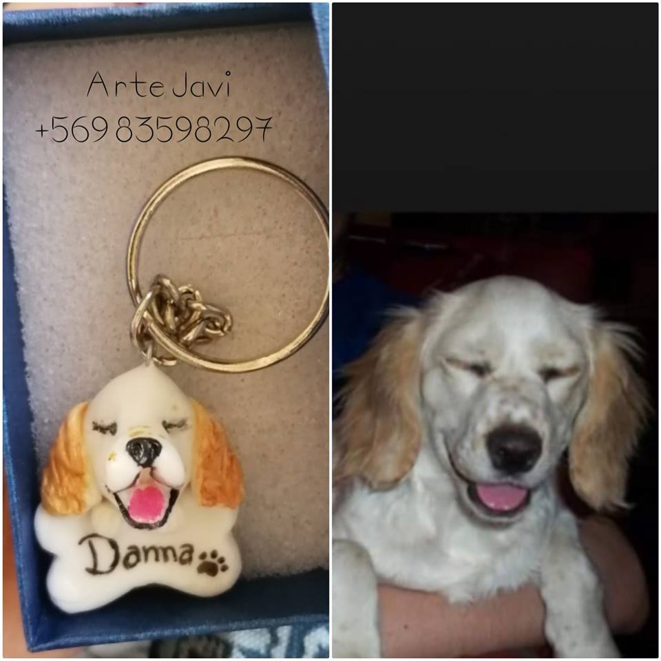

La chilena Josefina Berliner Duque es ingeniera comercial y cuenta con una larga trayectoria en la
Fundación Artesanías de Chile. Desde el 2014, funge como su directora ejecutiva, pero anteriormente
asumió diferentes cargos como la subdirección, coordinación de distintos departamentos y diversos proyectos,
funciones claves en planificación estratégica y gestión de presupuestos, por lo que conoce esta fundación como
a la palma de su mano.
Su aporte ha estado orientado a generar cambios en las estrategias comerciales y el mejoramiento de la calidad
de las artesanías de los pueblos originarios de Chile y, aunque las cifras económicas siempre son importantes,
la principal preocupación de Berliner es la gente, los 2.200 artesanos que forman parte de la Red de la Fundación
y los muchos otros que aspiran a integrarla.
| PRODUCTO | DESCRIPCION | PRECIO | FOTO REFERENCIA |
|---|---|---|---|
| Llavero | Cara personalizada con hueso o pescado y nombre | $5.000 |  |
| Pulsera | Hasta tres dijes distintos personalizados, cadena acero quirurgico | $10.000 |